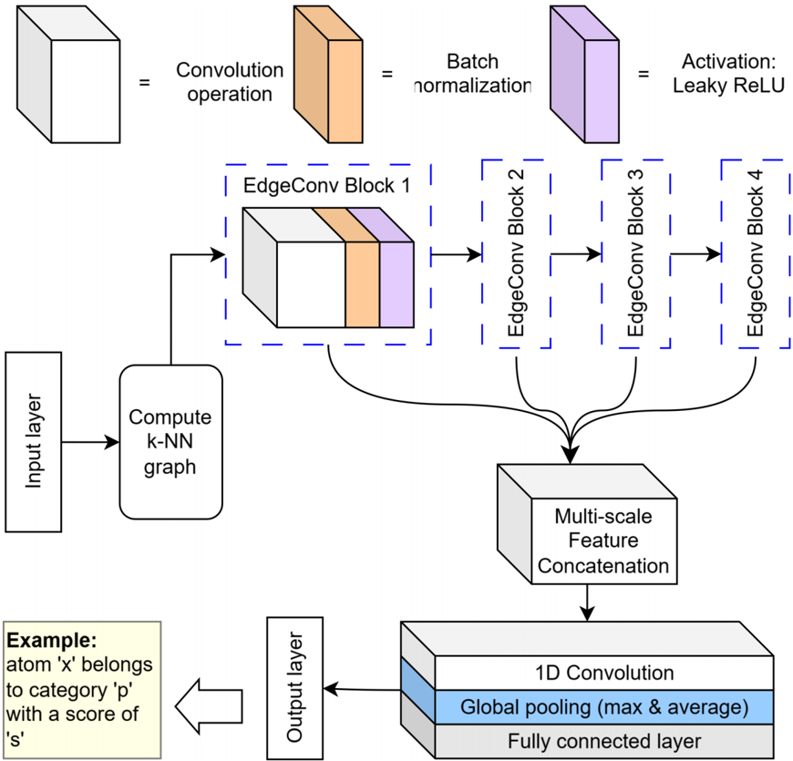
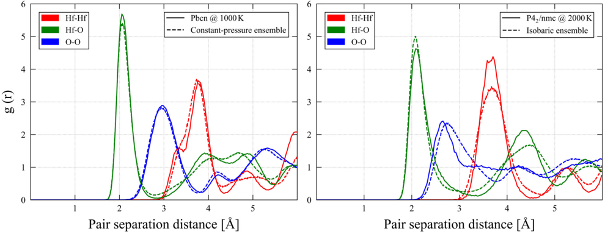
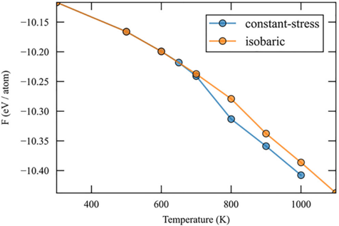
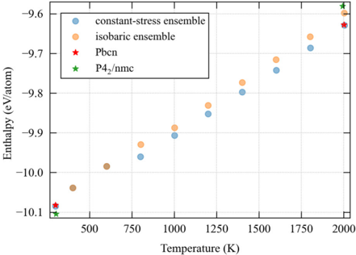
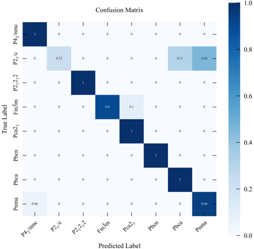
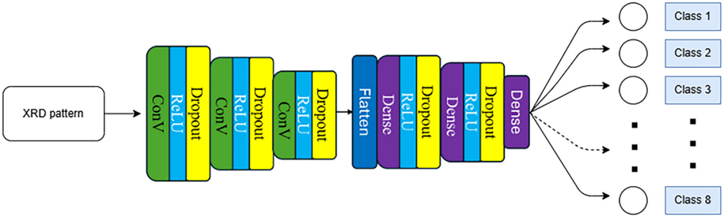

Autores: Y. H. Kankanamalage, Y. Xi, S. Zhang, S. Singh, N. Abdolrahim (Univ. of Rochester)
Revista: Phys. Rev. Materials 10, 014414 (2026), DOI: 10.1103/gkvf-t1vl
Objetivo
Desarrollar un potencial interatómico basado en machine learning (MLIP) para HfO₂ entrenado con datos DFT, y usarlo para investigar las transiciones de fase del HfO₂ ferroeléctrico (Pca2₁) bajo presión y temperatura.
Contexto físico
- HfO₂ Pca2₁ (ortorrómbico polar) es la fase ferroeléctrica clave para memorias no volátiles y electrónica CMOS.
- Polarización remanente ≈ 50 μC/cm² en films delgados.
- Estabilidad bajo T y σ es lo que decide si funciona en dispositivos reales.
- Potenciales empíricos clásicos (tipo Matsui–Akaogi) no capturan correctamente las fases de TiO₂/ZrO₂/HfO₂ → motivación del MLIP.
Pipeline del MLIP
- Generación de datos DFT abarcando varias fases y un rango amplio de P y T.
- Entrenamiento de un potencial deep-learning-based (no especifica arquitectura concreta — probablemente DeepMD o similar).
- Validación contra DFT:
- Parámetros de red
- Equation of state
- Bulk y shear moduli
- Elastic constants
→ coinciden en varias fases y presiones. - MD a 200–2500 K en LAMMPS.
- Caracterización con:
- Local symmetry identification
- Radial distribution function
- X-ray diffraction patterns sintéticos
Resultados clave
| Condición | Transición de fase observada |
|---|---|
| Estado deviatórico puro (σxx, σyy, σzz individuales no necesariamente cero) | Pca2₁ → tetragonal P4₂/nmc |
| Stress cero (σxx = σyy = σzz = 0) | Pca2₁ → ortorrómbico Pbcn |
Es decir: el modo de control del estrés en MD cambia cualitativamente la transición. Esto es relevante porque un experimento ferroico real opera con condiciones de contorno mecánicas concretas (films, capacitores) que deciden el camino de transición.
Aportes
- Primer MLIP de alta precisión específico para HfO₂ cubriendo varias fases.
- Muestra que ensemble isobárico vs constant stress elige caminos de transición distintos — no es un artefacto numérico.
- Guía para experimentos: qué stress macroscópico aplicar para favorecer cada fase competidora.
Conexiones
- Mismo paradigma que [[CarNet_tensores_cartesianos_Chen_2025]] (potenciales ML), pero para un óxido binario ferroeléctrico.
- Ejemplo concreto del workflow descrito en [[Review_DL_materiales_Choudhary_2022]] (sección de potenciales ML).
- Útil como referencia metodológica si querés entrenar tu propio potencial para Cu-Ni / W / etc.
Figuras del Paper (11)
Sin caption
Figura en pagina 1.

FIG. 1. Crystal structures of different phases of HfO2: (a) Ferroelectric Orthorhombic ( Pca 21) phase, (b) Tetragonal ( P 42 / nmc ) phase, and (c) Orthorhombic ( Pbcn ) phase. Gold spheres represent Hf atoms, and red spheres represent O atoms. The Pca 21 phase exhibits a noncentrosymmetric structure with spontaneous polarization, while the P 42 / nmc and Pbcn phases are centrosymmetric and nonpolar. The Pbcn phase is considered the parent structure of Pca 21 connected through a soft polar mode [2], highlighting their structural relationship.
FIG. 1. Crystal structures of different phases of HfO2: (a) Ferroelectric Orthorhombic ( Pca 21) phase, (b) Tetragonal ( P 42 / nmc ) phase, and (c) Orthorhombic ( Pbcn ) phase. Gold spheres represent Hf atoms, and red spheres represent O atoms. The Pca 21 phase exhibits a noncentrosymmetric structure with spontaneous polarization, while the P 42 / nmc and Pbcn phases are centrosymmetric and nonpolar. The Pbcn phase is considered the parent structure of Pca 21 connected through a soft polar mode [2], highlighting their structural relationship.

FIG. 3. Predicted bulk modulus (B) and shear modulus (G) from the MLIP model compared against DFT reference values for six HfO2 polymorphs. All quantities were computed at 0 K and 0 GPa. DFT reference values are taken from Ref. [19]. The Pbcn and Fm ¯ 3 m phases-denoted by open symbols-were not included in the MLIP training dataset, showing the model's transferability to previously unseen structures.
FIG. 3. Predicted bulk modulus (B) and shear modulus (G) from the MLIP model compared against DFT reference values for six HfO2 polymorphs. All quantities were computed at 0 K and 0 GPa. DFT reference values are taken from Ref. [19]. The Pbcn and Fm ¯ 3 m phases-denoted by open symbols-were not included in the MLIP training dataset, showing the model's transferability to previously unseen structures.

FIG. 2. Equations of state (energy vs volume) for HfO2 polymorphs: Pbca , Pca 21, Fm ¯ 3 m , P 42 / nmc , P 21 / c , and Pbcn . Circular markers show DFT reference data, while star markers indicate calculations from the developed MLIP. The third-order Birch-Murnaghan fits to the MLIP data are also shown as dashed curves. The close agreement between MLIP and DFT curves across all volumes highlights the MLIP's accuracy in reproducing the DFT equation of state. Note that Fm ¯ 3 m and Pbcn phases were not included in the training set.
FIG. 2. Equations of state (energy vs volume) for HfO2 polymorphs: Pbca , Pca 21, Fm ¯ 3 m , P 42 / nmc , P 21 / c , and Pbcn . Circular markers show DFT reference data, while star markers indicate calculations from the developed MLIP. The third-order Birch-Murnaghan fits to the MLIP data are also shown as dashed curves. The close agreement between MLIP and DFT curves across all volumes highlights the MLIP's accuracy in reproducing the DFT equation of state. Note that Fm ¯ 3 m and Pbcn phases were not included in the training set.

FIG. 4. Pressure dependence of the nine independent elastic constants Cij of the Pca 21 phase of HfO2. DFT results are shown as dashed lines with square markers, while MLIP predictions are solid lines with circle markers. Line colors identify each Cij component as listed in the right legend.
FIG. 4. Pressure dependence of the nine independent elastic constants Cij of the Pca 21 phase of HfO2. DFT results are shown as dashed lines with square markers, while MLIP predictions are solid lines with circle markers. Line colors identify each Cij component as listed in the right legend.

FIG. 5. Schematic of the DGCNN architecture. The model constructs a k-nearest neighbor graph and processes it through four stages of edge-convolution operations. The outputs from these convolutional stages are merged, and only the maximum and average responses are pooled to create a descriptor of each atom's local environment. This descriptor is then used to assign each atom to its corresponding class.
FIG. 5. Schematic of the DGCNN architecture. The model constructs a k-nearest neighbor graph and processes it through four stages of edge-convolution operations. The outputs from these convolutional stages are merged, and only the maximum and average responses are pooled to create a descriptor of each atom's local environment. This descriptor is then used to assign each atom to its corresponding class.

FIG. 6. Comparison of Radial distribution functions (RDFs)-Left: constant-stress ensemble and pure Pbcn phase, both at ∼ 1000 K and 0 GPa. Right: isobaric ensemble and pure P 42 / nmc phase, both at ∼ 2000 K and 0 GPa. The systems were first equilibrated for 120 ps, followed by time-averaging of the RDFs to ensure statistical reliability.
FIG. 6. Comparison of Radial distribution functions (RDFs)-Left: constant-stress ensemble and pure Pbcn phase, both at ∼ 1000 K and 0 GPa. Right: isobaric ensemble and pure P 42 / nmc phase, both at ∼ 2000 K and 0 GPa. The systems were first equilibrated for 120 ps, followed by time-averaging of the RDFs to ensure statistical reliability.

Sin caption
Figura en pagina 9.

FIG. 7. Left: enthalpy of the system of the two ensembles as a function of temperature. The graph includes (marked with stars) systems containing pure P 42 / nmc and Pbcn phases as reference points. Right: Helmholtz free energy of the two ensembles at comparable temperatures.
FIG. 7. Left: enthalpy of the system of the two ensembles as a function of temperature. The graph includes (marked with stars) systems containing pure P 42 / nmc and Pbcn phases as reference points. Right: Helmholtz free energy of the two ensembles at comparable temperatures.

FIG. 8. Confusion matrix of the hold-out dataset for the model with input cluster size = 16.
FIG. 8. Confusion matrix of the hold-out dataset for the model with input cluster size = 16.

FIG. 9. No-pooling convolutional neural network (NPCNN) architecture. The input is the XRD pattern, and the output is the desired classification: eight space groups.
FIG. 9. No-pooling convolutional neural network (NPCNN) architecture. The input is the XRD pattern, and the output is the desired classification: eight space groups.